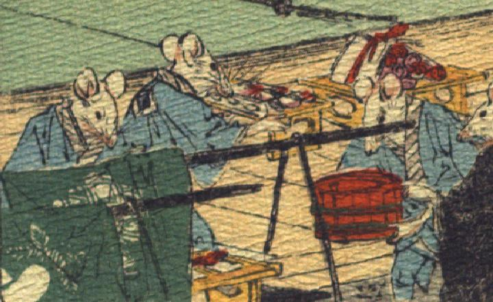

結納品を運ぶ鼠たち。空色の羽織と股引を身に着け、桶や品物が乗った台を運んでいる。
著作者：J.Dautremer／出典：親書誌：U426_nichibunken_0111：Le mariage de la souris／日付：2006／資源識別子：U426_nichibunken_0111_0004_0003
Copyright (c)2010- International Research Center for Japanese Studies, Kyoto, Japan. All rights reserved.